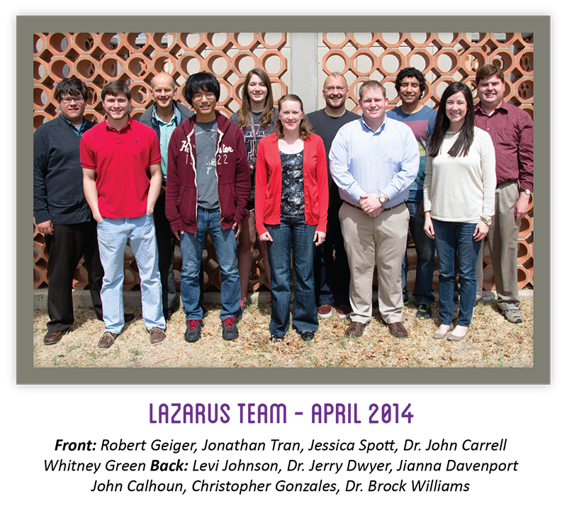

LAZARUS Team
The Professors
Name: Dr. John Carrell
Day Job: Instructor, TTU Department of Industrial Engineering
LAZARUS Title: Head Mechanic
LAZARUS Duties: Dr. Carrell is overseeing the design and construction of the Schoenberg Cluster support structure.
Name: Dr. Jerry Dwyer
Day Job: Professor, TTU Department of Mathematics & Statistics; Director, TTU STEM-CORE
LAZARUS Title: Humanitarian
LAZARUS Duties: Dr. Dwyer manages the support staff and LAZARUS outreach efforts.
Links: Website
Name: Dr. Brock Williams
Day Job: Professor, TTU Department of Mathematics & Statistics
LAZARUS Title: Director
LAZARUS Duties: Dr. Williams oversees all aspects of the LAZARUS Project.
Links: Website | Video Interview
The Graduate Student
Name: John Calhoun
Day Job: Graduate Student, TTU Department of Mathematics & Statistics
LAZARUS Title: Instigator
LAZARUS Duties: John's predilection for the undead and passion for research seem to have started this whole thing.
Links: Video Interview 1 | Video Interview 2
The Undergraduate Students
Name: Jessica Dao
Day Job: Undergraduate Mathematics Major
LAZARUS Title: Quiet Coder
LAZARUS Duties: Jessica is working on extensive research on Verilog and FPGAs and how they enhance the speed in solving math equations.
Name: Christian Harkins
Day Job: Undergraduate Biology Major, PRISM Scholar
LAZARUS Title: Ebola Expert
LAZARUS Duties: Christian is exploring the possibilities of using the zombie code to model Ebola outbreaks across the globe.
Name: Omar Monarrez
Day Job: Undergraduate Mathematics/Computer Science Double Major, PRISM Scholar
LAZARUS Title: Video Guru
LAZARUS Duties: Omar is working on planning, constructing and enhancing a multi-screen video wall outside the lab.
Name: Cat Nicosia
Day Job: Undergraduate Mathematics Major
LAZARUS Title: Social Media Expert
LAZARUS Duties: Cat works on coordinating social media through use of various outlets.